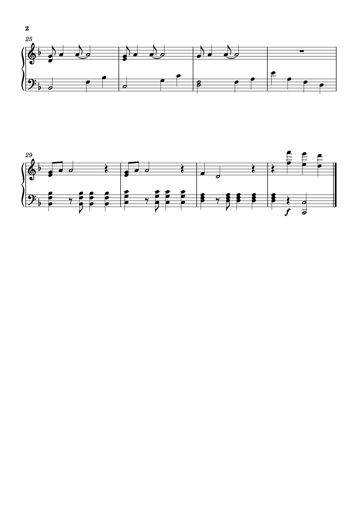

For this task I have transcribed I NEED U by BTS. The original arrangement of this was written by Carmen Chan and can be found on MuseScore. When notating this piece of music, I firstly found some difficulty in finding a notated piece of music for my chosen song, most were either behind a paywall or just not accurate to the piece of music. Screenshots of my transcribed piece can be found below.
